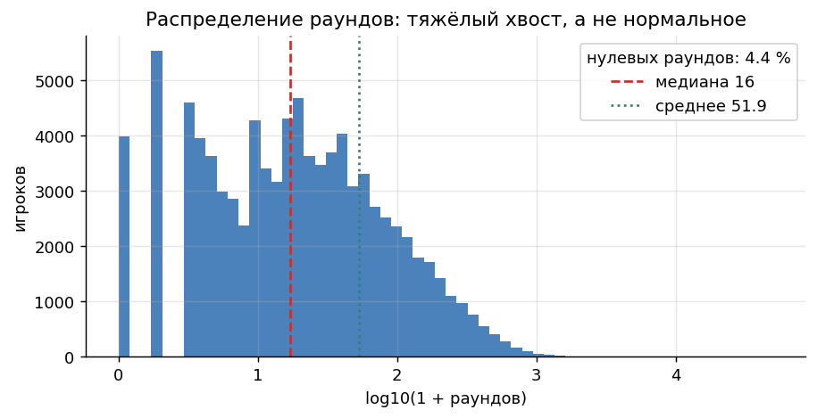
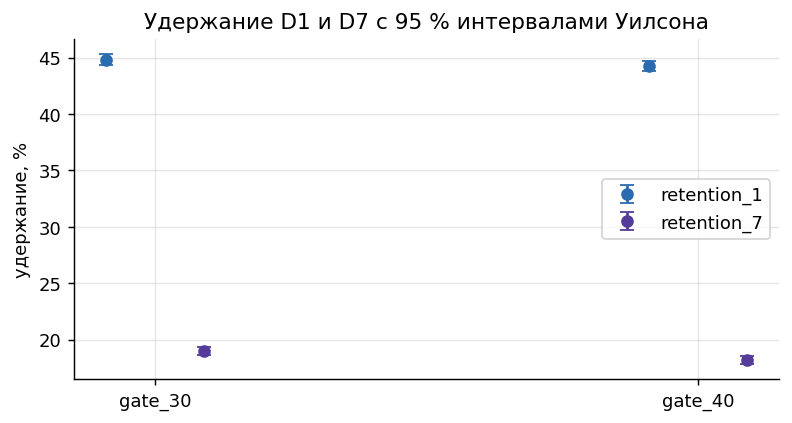
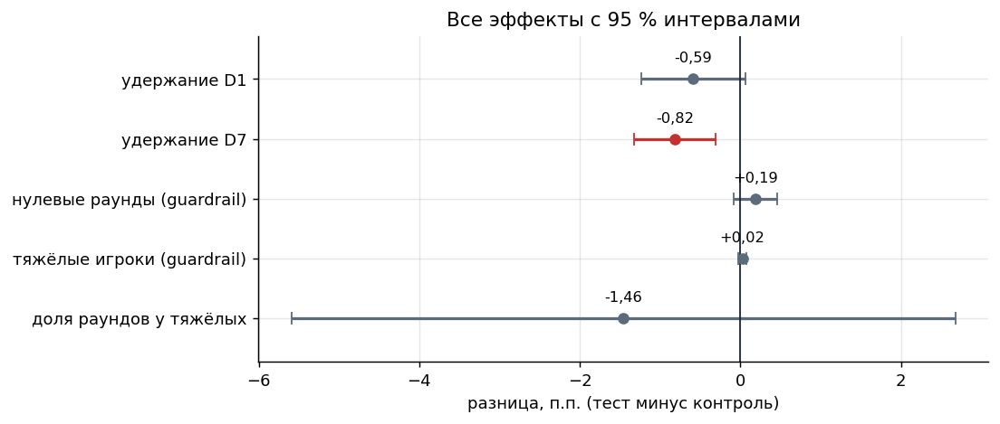
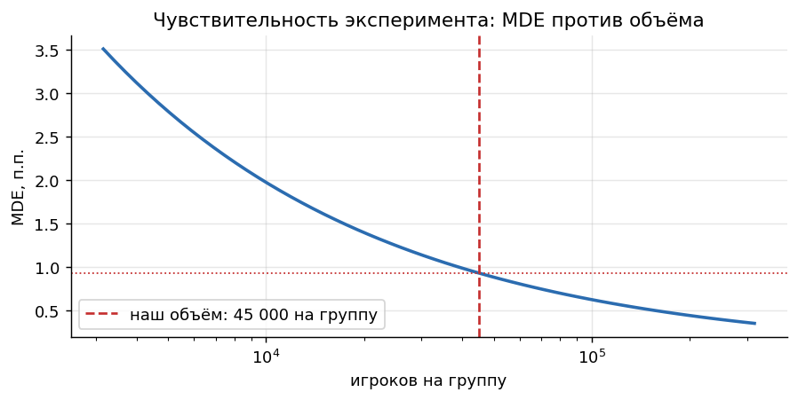
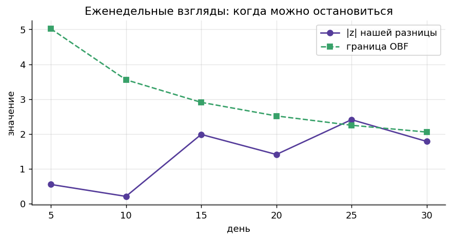
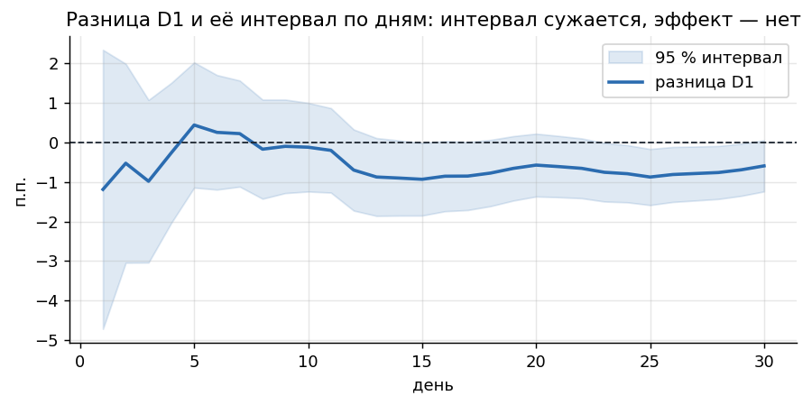
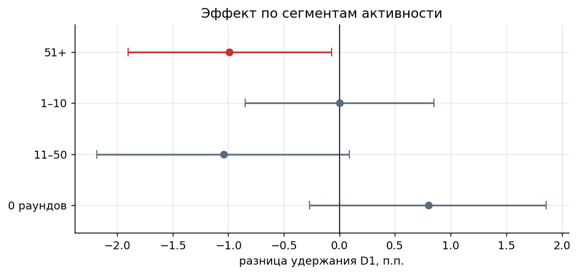
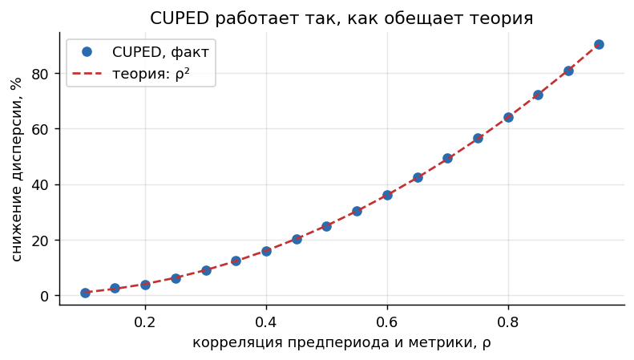

Графики эксперимента
Восемь рисунков из ноутбука — те же расчёты, что в отчёте. Полный разбор с кодом: notebooks/experiment_tour.ipynb · ← к результатам
Распределение раундов: тяжёлый хвост

Медиана 16, среднее 52, максимум 49 854. Поэтому средние раунды сравнивать нельзя без оговорок, а медиана устойчива.
Удержание D1 и D7 с интервалами Уилсона

Разница маленькая: интервалы почти соприкасаются. Уже здесь видно, что эффект на границе чувствительности.
Все эффекты с 95 % интервалами

D7 не пересекает ноль, D1 — пересекает. Guardrails спокойны, доля раундов у тяжёлых измерена широко из-за выброса.
Чувствительность: MDE против объёма

При 45 000 игроках на группу различимы ~0,9 п.п. по D1. Чтобы поймать 0,5 п.п., нужно примерно втрое больше.
Последовательный мониторинг

|z| против границы O'Brien–Fleming: на 25-м дне линия выходит за границу, к 30-му возвращается. Так выглядит честная остановка.
Сужение интервала по дням

Интервал сужается с накоплением данных, а сам эффект остаётся около −0,6 п.п. — данных больше, эффект не появился.
Эффект по сегментам активности

После поправки Холма значимых сегментов нет: эффект не сконцентрирован ни в одном из четырёх.
CUPED против теории

Фактическое снижение дисперсии ложится на кривую ρ² — реализация верна. Метод показан, но не применён: предпериода в данных нет.